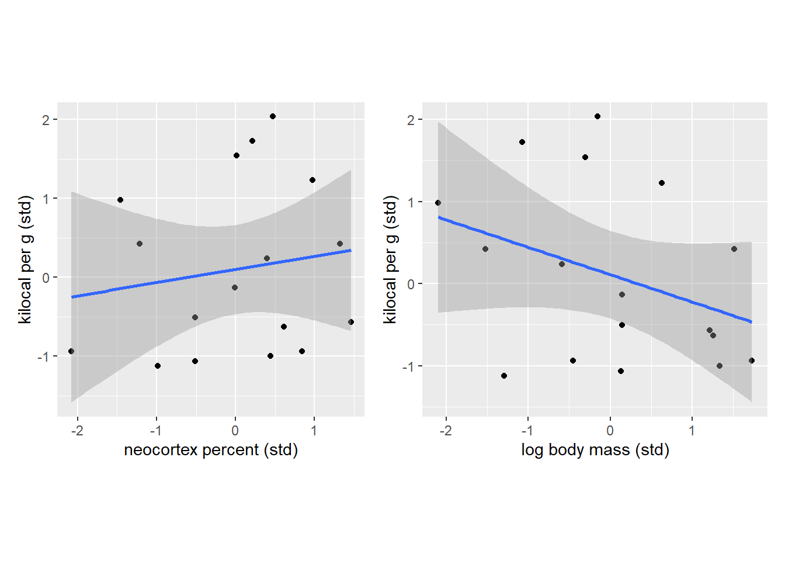
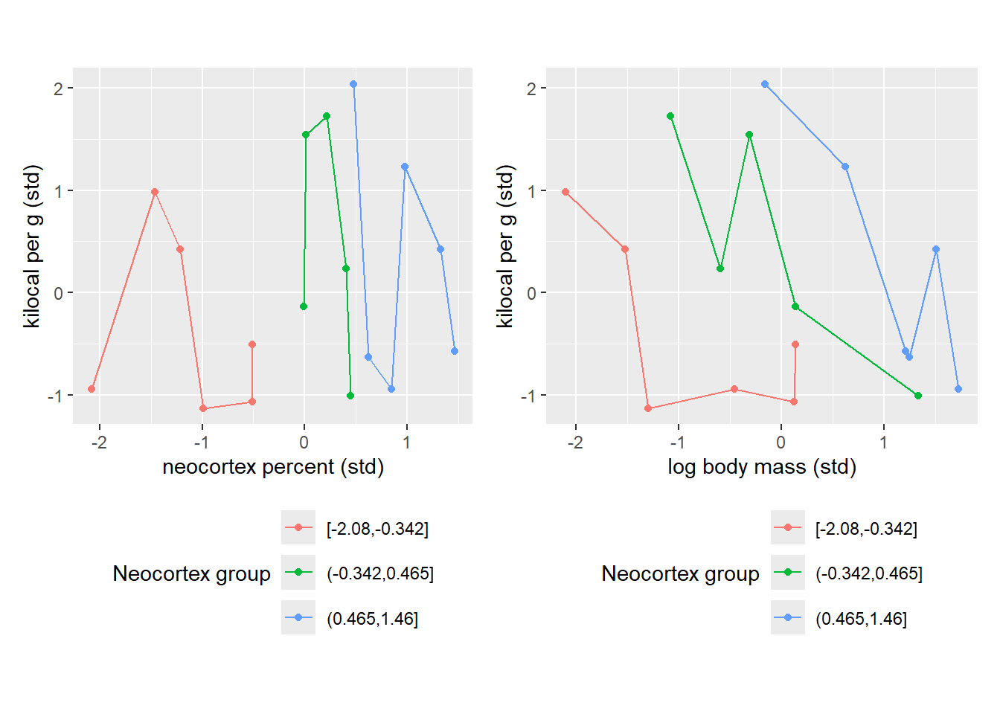
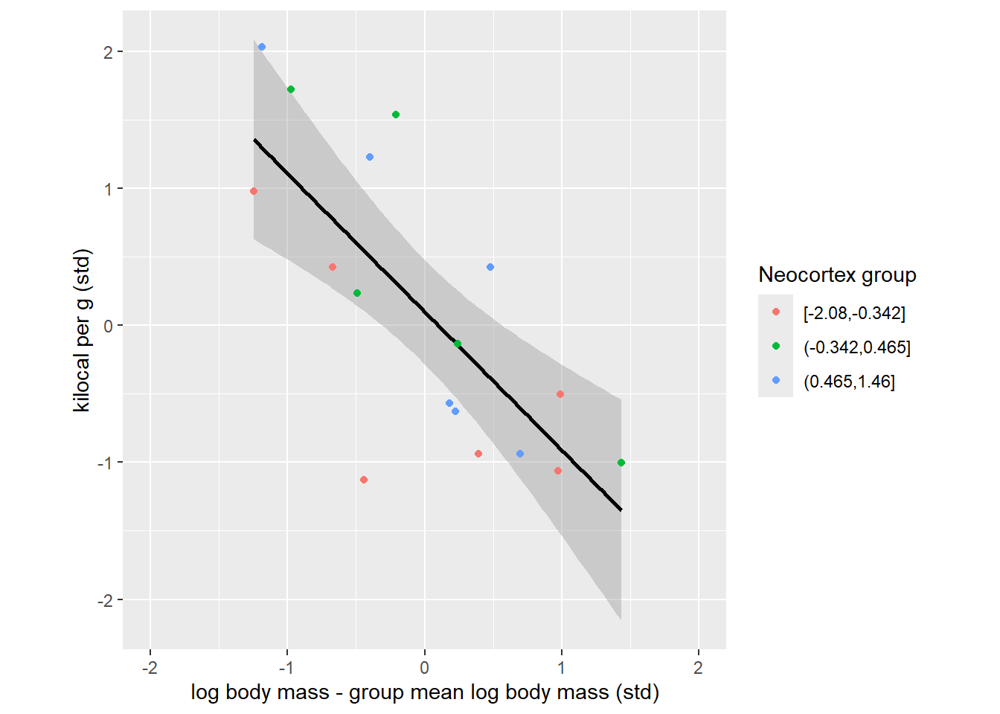
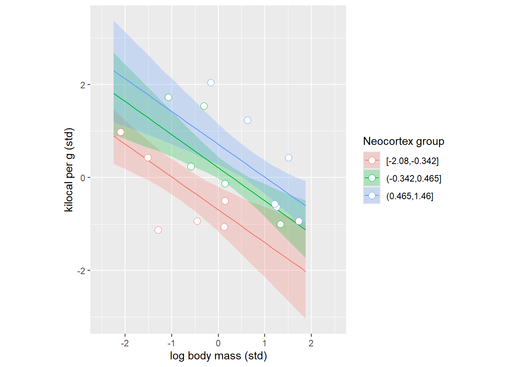

These notes are on section 5.2 “Masked relationship” from chapter 5 “The Many Variables & The Spurious Waffles”. This section introduces is a mirror twin of section 5.1 on spurious associations. The latter explores how each of two predictors can have a strong relationship with an outcome variable if fitted individually but how only one of them retains that relationship when both predictors are used in multiple regression. Section 5.2 is concerned with the exact opposite. When we look at the association between each predictor variable (neocortex percent and log body mass) and the richness of milk individually, we find nothing. However, when you use both simultaneously via multiple regression, we find that both are strongly associated with the outcome variable.
The key to understanding this are figure 5.9 (particularly, the bottom counterfactual plots) and an explanation on page 151 that coefficients of regression model shows that “species that have high neocortex percent for their body mass have higher milk energy” and “species with high body mass for their neocortex percent have lower milk energy”. In other words, if you take several species with very similar body mass, you expect those with higher percent of neocortex to have richer milk. Conversely, if you handpick several species with very similar neocortex percentage, you expect that the larger ones will have a less energetic milk. But because these two predictor variables are correlated, this relationship is easy to see only when you fix one of them. Figure 5.9 tries to show that but we can do better by (artificially) grouping the data looking at relationship between each predictor variable and the milk energy individually.
Let us start by replicating top subplots in figure 5.9. Note that 1) I used frequentist linear model fit with flat priors via geom_smooth() and, therefore, 2) the stripes correspond to standard error rather than 89% credible interval. However, the two are close enough in this case for illustration purposes.
data(milk)milk_df <- milk %>%# standardizemutate(K =standardize(kcal.per.g),N =standardize(neocortex.perc),M =standardize(log(mass))) %>%# keep only complete casesna.omit()NK_plot <-ggplot(milk_df, aes(x = N, y=K)) +geom_point() +geom_smooth(method="lm", formula=y~x) +xlab("neocortex percent (std)") +ylab("kilocal per g (std)") +coord_equal()MK_plot <-ggplot(milk_df, aes(x = M, y=K)) +geom_point() +geom_smooth(method="lm", formula=y~x) +xlab("log body mass (std)") +ylab("kilocal per g (std)") +coord_equal()NK_plot | MK_plot

So, once again, we see that there is no clear relationship is evident if we consider neocortex percent while ignoring body mass of an animal and, vice versa, when we look only at the log body mass ignoring the cortex. Let us reduce our state of ignorance by splitting individual species into three groups based on their similarity in neocortex percentage. Note that I have put no extra care into the grouping process apart from ensuring that all groups have roughly the same number of species. Also note that connecting lines have no specific meaning and I’ve added them only to make visual grouping of dots of the same color easier.
milk_df <- milk_df %>%# split data into three groupsmutate(`Mass group`=cut_number(M, 3), `Neocortex group`=cut_number(N, 3))NK_plot <-ggplot(milk_df, aes(x = N, y=K, color=`Neocortex group`)) +geom_point() +geom_line() +xlab("neocortex percent (std)") +ylab("kilocal per g (std)") +theme(legend.position="bottom") +guides(col =guide_legend(nrow =3, byrow =TRUE)) +coord_equal()MK_plot <-ggplot(milk_df, aes(x = M, y=K, color=`Neocortex group`)) +geom_point() +geom_line() +xlab("log body mass (std)") +ylab("kilocal per g (std)") +theme(legend.position="bottom") +guides(col =guide_legend(nrow =3, byrow =TRUE)) +coord_equal()NK_plot | MK_plot

Once we group species either by their their neocortex percent, you can immediately see the pattern. The pattern on the left is trivial as it merely shows our grouping based on low (red), medium (green), and high (blue) percentage of neocortex. However, when we look at the right plot, we see how species with similar neocortex percentage cluster nicely together and this way you can see a nice negative correlation between log body mass and milk energy within each group. This is because the same absolute log body mass corresponds to different relative log body mass with each group. I.e., a vertical slice through body mass leads to different values of milk energy because these values come from different neocortex percent groups. To summarize, we can see that log body mass is informative only if we know neocortex percent of an animal.
Let us try to visualize what multiple regression is doing. Keep in mind that this will only be a rough approximation because we will use just three means (one for each neocortex percent group), whereas our model computes an appropriate mean for every single specie. We will emulate the model check of whether “species that have particular neocortex percent for their body mass have lower milk energy” by centering each group, i.e., subtracting each groups’ mean from body mass of each specie from that group. In other words, we align each group so that average bogy mass species for each group are in the center, the larger species within each group are on the right and the smaller species within each group are on the left. This way we remove a positive correlation between neocortex percent and body mass and, therefore, can see the effect of the body mass on the milk energy alone. And, even in this approximate way the dependence in very clear.
milk_df <- milk_df %>%group_by(`Neocortex group`) %>%mutate(cM = M -mean(M))ggplot(milk_df, aes(x = cM, y=K)) +geom_smooth(method="lm", formula=y~x, color="black") +geom_point(aes(color=`Neocortex group`)) +xlab("log body mass - group mean log body mass (std)") +ylab("kilocal per g (std)") +theme(legend.position="right") +guides(col =guide_legend(nrow =3, byrow =TRUE)) +xlim(-2, 2) +coord_equal()

The plot above expresses the same idea as a counterfactual right bottom plot in figure 5.9. Where, the question was “what is the effect of log body mass for all species with an average neocortex percent”, so single very specific group of animals. Our plot merely extended that idea to three groups. To appreciate this the link, let us fit the model and plot same counterfactuals for each group that we identified.
m5.7<-quap(alist( K ~dnorm( mu , sigma ) , mu <- a + bN*N + bM*M , a ~dnorm( 0 , 0.2 ) , bN ~dnorm( 0 , 0.5 ) , bM ~dnorm( 0 , 0.5 ) , sigma ~dexp( 1 ) ),data=milk_df)# function to compute counterfactualscompute_counterfactual <-function(quap_fit, neocortex, logmass){ mu <-link(quap_fit, data=data.frame(N=neocortex, M=logmass)) mu_PI <-apply(mu,2,PI)tibble(M = logmass,N = neocortex,K =apply(mu,2,mean),KLower = mu_PI[1, ],KUpper = mu_PI[2, ])}# defining x-ticks as all milk values at regular intervalsx_seq <-seq( from=min(milk_df$M)-0.15 , to=max(milk_df$M)+0.15 , length.out=30)# mean neocortex percent for each neocortex percent groupneocortex_counterfactuals_df <-# compute average neocortex for each group milk_df %>%group_by(`Neocortex group`) %>%summarise(MeanPercent =mean(N), .groups="keep") %>%# compute counterfactual predictions for each groupgroup_modify(~compute_counterfactual(m5.7, neocortex=.x$MeanPercent, logmass=x_seq)) %>%ungroup()# plotting dataggplot(milk_df, aes(x = M, y=K, color=`Neocortex group`)) +geom_ribbon(data=neocortex_counterfactuals_df, aes(ymin=KLower, ymax=KUpper, fill=`Neocortex group`), color=NA, alpha=0.25) +geom_line(data=neocortex_counterfactuals_df) +geom_point(shape=21, fill="white", size=3) +xlab("log body mass (std)") +ylab("kilocal per g (std)") +xlim(-2.5, 2.5) +theme(legend.position="right") +guides(col =guide_legend(nrow =3, byrow =TRUE)) +coord_equal()

And we can do this the other way around grouping species by their log body mass.
Do these two examples (spriouos associations and masked relationship) mean that putting all variables into a model is always a good idea because “magic”? Unfortunately, no. These examples were handpicked by McElreath to show the power of multiple regression. He can also handpick an example when mindlessly throwing variables into a model would lead to a disaster, a.k.a. Causal Salad (watch his three hour talk on that on YouTube). The take home message is same as before: Models are golems, they can help you understand the process you are investigating but they won’t understand it for you! It is your job to think about causal relationship using statistical inferences merely as an aid, not as an oracle.